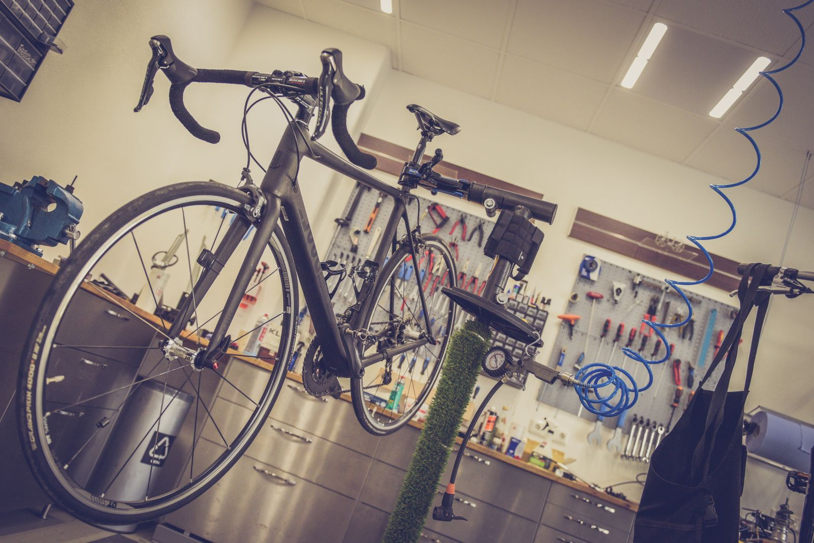
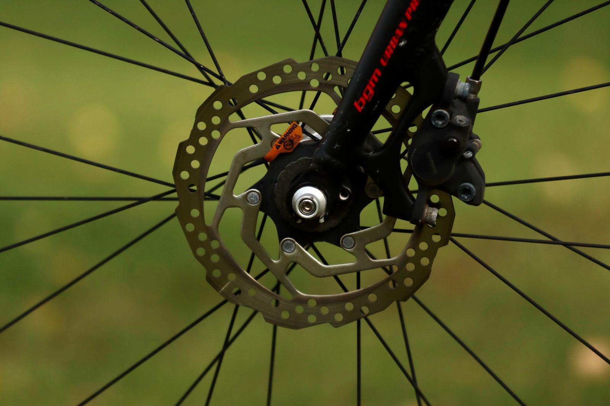
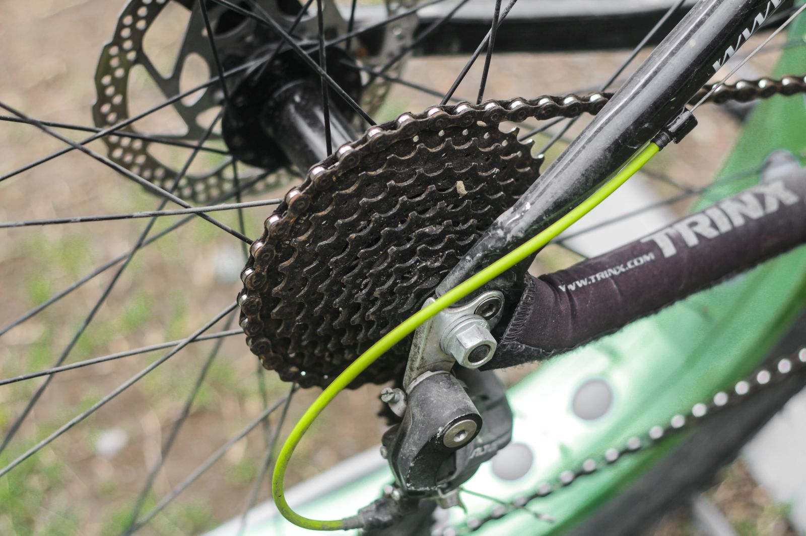

Punctures and flats
The single most common job, and the one people are most often stranded by. It is also the one worth ringing about straight away rather than wheeling it home.

Mobile cycle repair, central and inner London
I come to your home, your office or wherever the bike has stopped, and fix it there. Punctures, brakes, gears, e-bikes, and putting together the ones that arrive in a box.
Rated 5.0 on Google
The two things people write about most are the punctures and the turning up. In that order, and by the same margin.
What I fix
You do not need to know the right words for it. Describe what the bike is doing and I will tell you what it usually turns out to be.
The single most common job, and the one people are most often stranded by. It is also the one worth ringing about straight away rather than wheeling it home.

Rim or disc. Rubbing, pulling to the bars, or making a noise you have started riding around rather than fixing.

New gear cables, indexing, and the clicking that gets worse in the wet. If it feels slow rather than broken, it is usually this.
Yes. Several customers have had e-bikes seen to, including one repaired in the City after a puncture on the way in.
The box on the hallway floor. I will assemble it properly, at an arranged time, so you are not guessing at torque settings on a kitchen table.
What does it cost?
No price list here, because a puncture and a full service are not the same job and neither is a bike I have not seen. Ring and describe it and you will get a straight figure.
I carry the usual consumables. If it is something more specific, mention it on the phone and I will bring the part.
Ring 07898 051597Turning up
You are not really booking a repair. You are booking a person to be somewhere at a time, and if they are not, your day is worse than it was before you rang.
Which is why it is worth knowing what people actually write about afterwards. Alongside the punctures, the single most mentioned thing in the reviews is punctuality. Not the mechanics. The arriving.
That is a description of what customers have written down, not a promise about your particular Tuesday. Ring and we will agree a time, and you can judge it for yourself.
Where I come
Including the City, which is where a good number of the weekday jobs are. There is no shop and no address to come to, because the whole point is that I come to the bike.
Further out than that, ring and ask rather than assuming the answer is no. It often is not.
One thing worth knowing before you search
There are several businesses called The Bike Doctor, including a large one in London that does corporate fleet work, and others in Surrey, California and Australia. This is the mobile one, on 07898 051597.
The Bike Doctor
Mobile cycle repair, London
Calls taken until 8pm.
Questions
No, and you would be surprised how many people apologise for it. Say what it is doing. Clicking as you pedal, feeling slow, brakes rubbing. That is enough to work from.
The usual consumables, yes. Anything more specific, mention it when you ring and I will bring it rather than turning up and finding out.
Yes. Say it is an e-bike when you ring so I know what is coming.
That is a job I do. It gets built properly and set up for you, rather than approximately, in your own hallway.
Until 8pm.